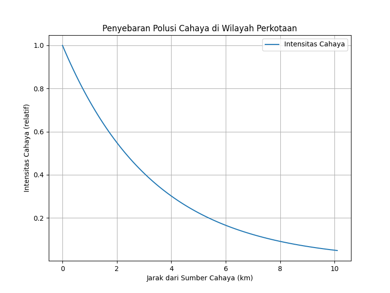

Deskripsi Topik
Polusi cahaya adalah salah satu bentuk pencemaran lingkungan yang berdampak pada ekosistem dan mengurangi visibilitas astronomi. Di wilayah perkotaan, cahaya buatan menyebar melalui partikel atmosfer seperti debu dan aerosol. Metode numerik, seperti Runge-Kutta Orde 4 (RK4), dapat digunakan untuk memodelkan penyebaran cahaya ini.
Script Python
import numpy as np
import matplotlib.pyplot as plt
# Fungsi model (penyebaran cahaya)
def light_pollution_model(t, y, scattering_coeff):
dydt = -scattering_coeff * y
return dydt
# Metode Runge-Kutta Orde 4
def runge_kutta_4(f, t0, y0, t_end, h, scattering_coeff):
t_values = [t0]
y_values = [y0]
t = t0
y = y0
while t < t_end:
k1 = h * f(t, y, scattering_coeff)
k2 = h * f(t + h/2, y + k1/2, scattering_coeff)
k3 = h * f(t + h/2, y + k2/2, scattering_coeff)
k4 = h * f(t + h, y + k3, scattering_coeff)
y += (k1 + 2*k2 + 2*k3 + k4) / 6
t += h
t_values.append(t)
y_values.append(y)
return np.array(t_values), np.array(y_values)
# Parameter simulasi
t0 = 0 # waktu awal (dalam km dari sumber cahaya)
y0 = 1.0 # intensitas cahaya awal
t_end = 10 # jarak maksimum yang diamati
h = 0.1 # langkah
scattering_coeff = 0.3 # koefisien hamburan atmosfer
# Jalankan simulasi
t_values, y_values = runge_kutta_4(light_pollution_model, t0, y0, t_end, h, scattering_coeff)
# Plot hasil simulasi
plt.figure(figsize=(8, 6))
plt.plot(t_values, y_values, label="Intensitas Cahaya")
plt.xlabel("Jarak dari Sumber Cahaya (km)")
plt.ylabel("Intensitas Cahaya (relatif)")
plt.title("Penyebaran Polusi Cahaya di Wilayah Perkotaan")
plt.grid()
plt.legend()
plt.savefig("light_pollution.png")
plt.show()
Output

Grafik di atas menunjukkan bagaimana intensitas cahaya menurun seiring dengan jarak dari sumber karena efek hamburan atmosfer.